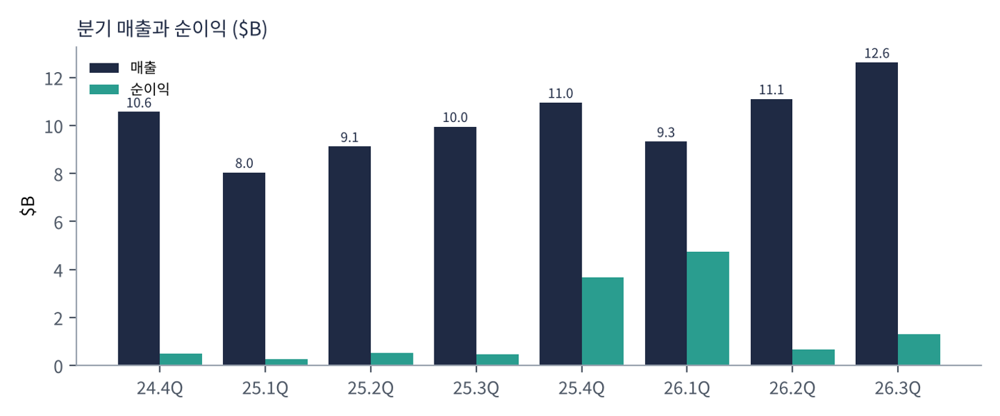
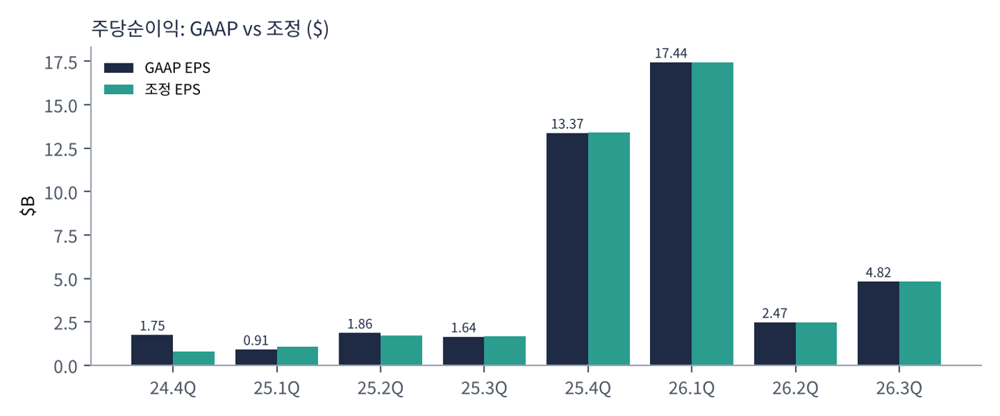
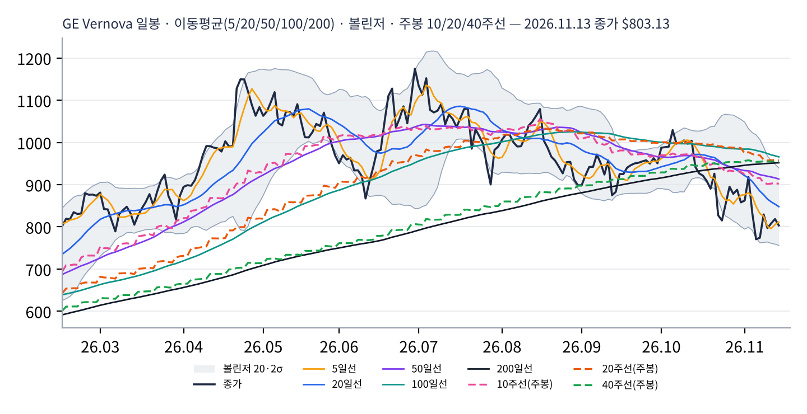
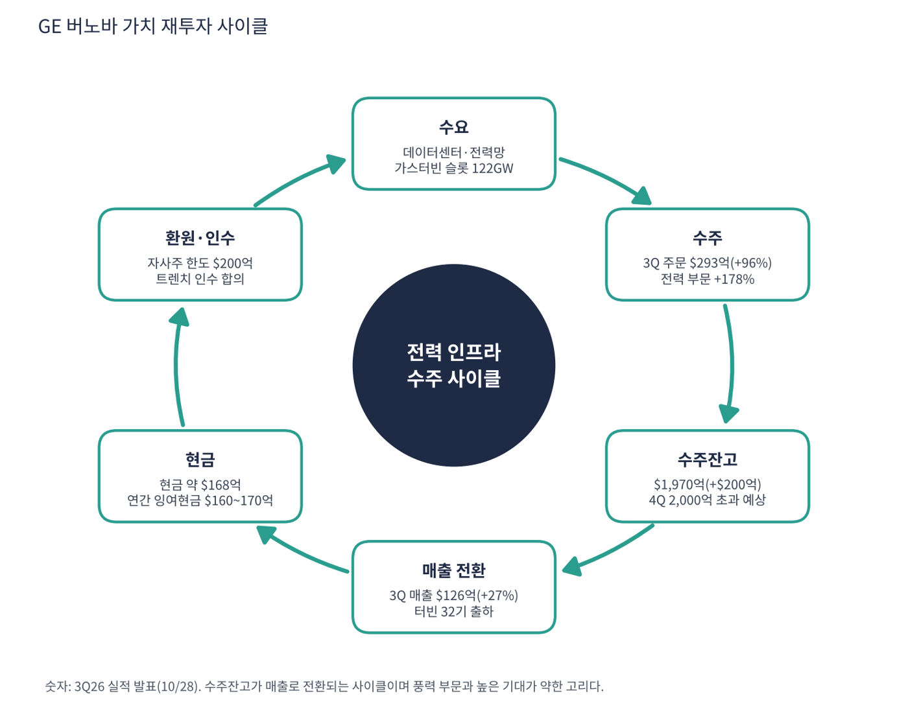

GE 버노바는 2024년 GE에서 분리된 전력 설비 회사다. 가스터빈 등 발전 설비와 서비스(전력 부문), 변압기·고압 송전 설비(전기화 부문), 풍력 터빈(풍력 부문) 세 사업을 한다. 데이터센터와 전력망 수요로 주문과 수주잔고가 급증하는 중이지만, TTM EPS가 일회성 이익으로 부풀어 있고 주가는 7월 고점에서 33% 내려와 있는 회사다.
| 항목 | 내용 |
|---|---|
| 종목 | GE Vernova Inc. (GEV) · NYSE · 전력 설비 · 본사 미국 매사추세츠주 케임브리지 |
| 밸류에이션 | PER 21.1배(GAAP TTM, 일회성 이익 포함) · P/S 4.98배 (11/13 종가 $803.13) |
| 최근 분기(3Q26) | 매출 $126.3억(+27%, 자체 성장 +18%), 순이익 $12.9억, GAAP EPS $4.82, TV 조정 EPS $4.81 |
| 주문·잔고 | 주문 $293억(+96%), 수주잔고 $1,970억(+$200억). 장비 $1,040억, 서비스 $930억 |
| 부문(3Q) | 전력 주문 $218억(+178%)·매출 $61억(+25%), 전기화 주문 $54억(-9%), 풍력 주문 $21억(+16%)·매출 $27억(+4%) |
| 현금·부채 | 현금 약 $168억(전 분기 +$40억), 총차입금 약 $28억, TTM 잉여현금 약 $171억(스캐너) |
| 가이던스(2026) | 매출·조정 EBITDA 마진·잉여현금 모두 상향. 잉여현금 $160~170억. 자사주 매입 한도 $200억으로 확대 |
| 다음 실적 | 4Q26 실적: 2027년 1월 27일 예정(트레이딩뷰) |
| 직책 | 인물 | 역할·특징 |
|---|---|---|
| CEO | 스콧 스트래직 | 3Q에 가이던스 상향, 자사주 한도 확대, 트렌치 그룹 인수 합의를 함께 발표했다 |
경영 스타일: '수주 가격·마진 규율과 현금 환원'. 경영진은 수주잔고가 4Q에 $2,000억을 넘고 마진이 개선되며(가격과 신중한 수주 심사) 가스 부문 장비 잔고와 슬롯 예약이 연말 130GW 이상이 될 것으로 본다. 자사주 한도를 두 배로 늘렸고 고압 장비 회사 트렌치를 인수하기로 했다(마감은 2027년 말 예정).
3Q에 가스터빈 32기(애로파생 13기 포함)와 5GW를 출하했다. 전기화 부문은 에너지 관리 시스템, 중전압 무정전 전원, 솔리드 스테이트 변압기를 개발 중이다.
데이터센터와 전력망 보강 수요가 장비 수주를 이끈다. 전기화 부문의 데이터센터 관련 수주는 올해 누적 $60억을 넘었다.
| 분기 | 매출 | 순이익 | EPS | 조정 EPS | 특이 사항 |
|---|---|---|---|---|---|
| 2024.4Q | $105.6억 | $4.8억 | 1.75 | 0.81 | |
| 2025.1Q | $80.4억 | $2.5억 | 0.91 | 1.07 | |
| 2025.2Q | $91.2억 | $5.1억 | 1.86 | 1.73 | |
| 2025.3Q | $99.5억 | $4.5억 | 1.64 | 1.68 | |
| 2025.4Q | $109.5억 | $36.6억 | 13.37 | 13.39 | GAAP EPS 급등(원인 미확인) |
| 2026.1Q | $93.3억 | $47.5억 | 17.44 | 17.44 | GAAP EPS 급등(원인 미확인) |
| 2026.2Q | $111.0억 | $6.7억 | 2.47 | 2.47 | |
| 2026.3Q | $126.2억 | $12.9억 | 4.82 | 4.81 | 주문 +96%, 잔고 $1,970억 |


흐름 요약: 분기 매출은 $80~126억으로 3Q26이 최대다. GAAP EPS는 4Q25 $13.37, 1Q26 $17.44로 비정상적으로 높다(순이익 $36.6억·$47.5억). 이 일회성 이익의 원인은 확인하지 못했다. 회사는 별도 조정 EPS를 발표하지 않는 것으로 보이며 트레이딩뷰 Reported 값이 GAAP과 거의 같다. 4Q24~3Q25의 Reported 값은 GAAP과 다르게 표시돼 있다. 정상 분기로 보이는 2Q26 $2.47, 3Q26 $4.82가 현재의 이익 수준이다. 영업이익과 분기 설비투자는 이 자료에서 구하지 못해 뺐다.
| 부문 | 3Q26 주문 | 3Q26 매출 | 비고 |
|---|---|---|---|
| 전력(Power) | $218억(+178%) | $61억(+25%) | 가스 장비 슬롯 13GW를 주문으로 전환, 5GW 출하. 잔고 53→64GW, 슬롯 63→58GW |
| 전기화 | $54억(-9%) | n/a | 장비 잔고 $422억(+60%, 프로렉 $50억 포함). 주문 대 매출 비율 약 1.4 |
| 풍력 | $21억(+16%) | $27억(+4%) | 육상풍력 중심. 비니어드 윈드 소송 모두 해소 |
가스터빈이 성장을 이끈다. 전력 부문 주문이 3배 가까이 늘었고(55대 대형 터빈, 57대 애로파생 포함) 서비스 주문도 올해 +17%다. 미국 신규 육상풍력은 허가 지연과 관세 불확실성으로 부진하다.
GE 버노바의 방향은 '전력 수요 확대기에 가스·송전 설비와 서비스를 키우는 것'이다.
| 축 | 최근 움직임 |
|---|---|
| 가스 전력 | 장비 잔고·슬롯 예약 122GW → 연말 130GW 이상 목표 |
| 전기화 | 트렌치 그룹 인수 합의(마감 2027년 말), 데이터센터 수주 $60억+ |
| 풍력 | 수익성 개선, 소송 해소 |
| 주주 환원 | 자사주 한도 $200억 |

| 이동평균 | 값 | 종가 대비 | 해석 |
|---|---|---|---|
| 5일선 | $811.25 | -1.0% | 실적 후 약세 |
| 20일선 | $847.76 | -5.3% | 하락 |
| 50일선 | $913.18 | -12.1% | 하락 |
| 100일선 | $965.72 | -16.8% | 하락 |
| 200일선 | $951.79 | -15.6% | 현재가가 약 16% 아래 |
주봉 흐름: 2025년 11월 저점 $530 → 2026년 4월 주 +14% → 7/6 주 고점 $1,196 → 8~9월 $910~960 박스 → 10월 둘째 주부터 $921 → $815 → 11/2 주 저가 $750 → 11/13 $803으로 55일 저점($747) 부근.
| 규칙 | 기준 | 현재 값 | 신호 |
|---|---|---|---|
| 장기 추세 필터 | 종가 vs 200일선 | $803.13 < $951.79 | 매도 |
| 중장기 교차 | 50일선 vs 200일선 | $913.18 < $951.79 | 매도 |
| 단기 교차 | 20일선 vs 50일선 | $847.76 < $913.18 | 매도 |
| 돈키언 채널 | 55일 고가 $1,052.78 / 저가 $747.00 | 중간값 $899.89 아래 | 매도 |
| 1개월 모멘텀 | 21거래일 수익률 | -13.3% (기준 $926.44) | 매도 |
| 3개월 모멘텀 | 63거래일 수익률 | -25.6% (기준 $1,079.00) | 매도 |
| 6개월 모멘텀 | 126거래일 수익률 | -23.5% (기준 $1,049.23) | 매도 |
| 12개월 모멘텀 | 252거래일 수익률 | +39.6% (기준 $575.40) | 매수 |
| 종합 (8개 평균) | -0.75 | 강한 매도 |
해석: 12개월 모멘텀만 매수이고 나머지 7개가 매도다. 현재가는 200일선 대비 -16%, 55일 저점($747)과 가깝다. 14일 ATR $62.68 (7.8%)로 변동폭이 크다.
| 가격 | 무엇이 바뀌나 | 의미 |
|---|---|---|
| $747 이탈 | 55일 저점 | 채널 하단 이탈 |
| $848 | 20일선 | 단기 교차 개선 |
| $900 ~ 952 | 돈키언 중간값, 50일선, 200일선 | 여러 신호 매수 전환 구간 |
| 구분 | 가격대 | 근거 |
|---|---|---|
| 저항 2 | $900 ~ 952 | 돈키언 중간값, 50일선, 200일선 |
| 저항 1 | $848 ~ 860 | 20일선, 10월 말 반등 고점 |
| 지지 1 | $747 ~ 775 | 55일 저점, 11/2 주 저가 |
| 지지 2 | $530 | 52주 저점 |
추세는 약하지만 수주 데이터는 강하다. $747~800 지지 확인 시 계획 비중의 30%만 진입하고 종가 $710(ATR 약 1.5배 아래) 이탈 시 손절한다. 목표 1차 $848(20일선), 2차 $914(50일선). 4Q 실적(1월 27일)에서 잔고 $2,000억 초과 여부를 확인한다.
| 악재 요인 | 내용 | 강도 |
|---|---|---|
| 밸류에이션 | 정상화 EPS 기준 PER 약 42배 | 중간~높음 |
| 전기화 주문 둔화 | 3Q 주문 -9%(전년 대형 주문 기저) | 중간 |
| 풍력 | 미국 신규 육상풍력 허가·관세 불확실성 | 중간 |
| 일회성 EPS | 4Q25·1Q26 GAAP EPS가 비정상적으로 높음, 원인 미확인 | 참고 |
| 인수 통합 | 트렌치 인수(2027년 말 마감) | 참고 |
| 티커 | 회사 | PER(TTM) | PEG | P/S | EPS 성장(YoY) |
|---|---|---|---|---|---|
| GEV | GE 버노바 | 21.1배 | – | 4.98배 | – |
| GE | GE 에어로스페이스 | 38.3배 | – | 6.55배 | +15% |
| ETN | 이튼 | 35.3배 | – | 4.37배 | +0% |
| VRT | 버티브 | 37.8배 | – | 6.28배 | +102% |
| CAT | 캐터필러 | 23.5배 | – | 3.59배 | +31% |
| HON | 하니웰 | 9.5배 | – | 2.12배 | +23% |
GEV의 PER은 일회성 이익이 포함된 GAAP TTM이라 낮게 보인다. 성장률은 일회성 이익 때문에 비교 불가라 표시하지 않았다.
비교 결론: 일회성을 빼면 GEV의 PER(약 42배)은 이튼·버티브와 비슷하거나 높다. 수주잔고의 질과 가시성이 이를 정당화할지가 관건이다.
GE 버노바는 순현금 회사다. 현금 약 $168억, 총차입금 약 $28억으로 순현금 약 $140억이다. 고객 선수금이 현금에 포함돼 있을 가능성이 있다(확인하지 못함).
| 지표 | 값 | 계산·출처 | 해석 |
|---|---|---|---|
| 현금 | 약 $168억 | 스캐너·회사 발표 | 전 분기보다 $40억 증가 |
| 총차입금 | 약 $28억 | 스캐너 | 순현금 약 $140억 |
| TTM 잉여현금흐름 | 약 $171억 | 스캐너 | 시총 대비 8.0% |
| 2026 잉여현금 가이던스 | $160~170억 | 회사 상향 |
| 기준 | 값 | 비고 |
|---|---|---|
| P/S (TTM) | 4.98배 | 시총 $2,126억 ÷ TTM 매출 약 $426억(내 계산) |
| P/FCF | 약 12.4배 | 시총 ÷ 잉여현금 $171억 (내 계산, 선수금 영향 큼) |
| 동종 | 이튼 4.4, 버티브 6.3, GE 6.6, 캐터필러 3.6, 하니웰 2.1 | 11/13 스캐너 |
해석: 잉여현금 수익률 8.0%는 높지만 이 현금에는 대규모 선수금이 들어 있을 수 있다. 스트레스 가정(잉여현금 $171억 고정, 내 가정): P/FCF 10배면 시총 $1,710억(약 $647, -19%), 15배면 $2,565억(약 $969, +21%)이다. 선수금이 줄면 현금 창출이 둔화될 수 있다.
| 지표 | 값 | 판정 |
|---|---|---|
| PER (GAAP TTM) | 21.1배 | TTM EPS $38.11 (4Q25·1Q26 일회성 포함) |
| PER (3Q26 EPS × 4) | 약 41.7배 | $803.13 ÷ ($4.82 × 4) (내 가정) |
| EV / EBITDA | 약 43배 | EV ≈ 시총 $2,126억 + 차입금 $28억 − 현금 $168억 = $1,986억, ÷ 스캐너 TTM EBITDA $46억 |
| 방식 | PER | EPS 성장률 | PEG | 판정 |
|---|---|---|---|---|
| 트레이딩뷰 (GAAP TTM) | 21.1배 | +517.6% | 산출 불가 | TTM EPS가 일회성 이익으로 부풀음 |
| 3Q26 EPS × 4 기준 (내 가정) | 41.7배 | 3Q 전년 동기 대비 +186% | 참고 0.22 | 단일 분기 성장률이라 신뢰 낮음, 투자 판정 안 함 |
| 반기 기준 (2Q+3Q $7.28 vs 전년 $3.41) | – | +113% | – | 일회성 제외 EPS 성장은 약 두 배 |
판정: PEG 산출 불가. 일회성 이익 때문에 TTM EPS와 성장률이 모두 왜곡돼 있다. 이를 뺀 3Q 단일 분기 기준 PER은 약 42배로 높은 편이다. 이익 성장이 이어진다고 해도 현재 배수가 낮지 않다.

GE 버노바의 사이클은 수요 → 수주 → 잔고 → 매출 → 현금 → 환원·인수다. 풍력과 높은 기대 수준이 약한 고리다.
| 고리 | 현재 숫자 | 고리 강도 | 약해지는 신호 |
|---|---|---|---|
| ① 수요 | 가스 슬롯·잔고 122GW, 데이터센터 수주 | 강함 | 데이터센터 투자 둔화 |
| ② 수주 | 3Q $293억(+96%) | 강함 | 전기화 주문 -9% 지속 |
| ③ 잔고 | $1,970억, 4Q $2,000억 초과 예상 | 강함 | 주문 취소·지연 |
| ④ 매출 전환 | 3Q $126억(+27%) | 진행 | 공급망·출하 지연 |
| ⑤ 현금 | 현금 $168억, FCF 가이던스 $160~170억 | 강함 | 선수금 감소 |
| ⑥ 환원·인수 | 자사주 $200억, 트렌치 인수 | 진행 | 인수 후 통합·승인 |
구조: 대부분의 고리가 강하다.